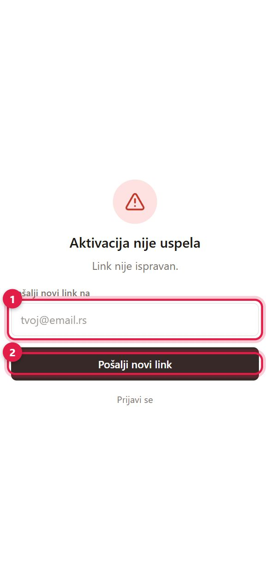
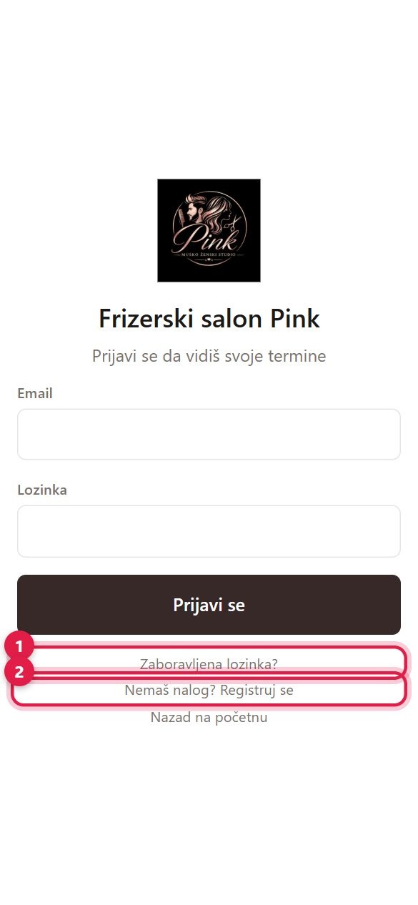
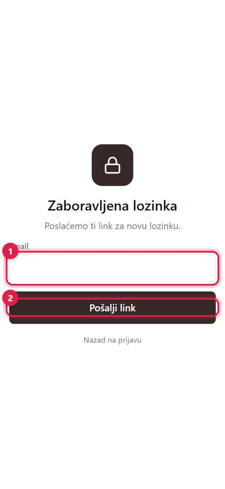

1Registracija i aktivacija naloga (klijenti)
- Klijent se registruje sam: 1 ime, prezime, email, telefon, lozinka i 2 „Registruj se".
- Na email stiže link za aktivaciju. Link važi 3 dana.
- Klik na link aktivira nalog i odmah prijavljuje klijenta. Ako je bio usred zakazivanja, vraća se na zakazivanje.
Ako se neko ponovo registruje istim emailom pre aktivacije, ne pravi se drugi nalog — podaci se osveže i stiže novi link.
Otvori registraciju
2Prijava pre aktivacije
Ako se klijent prijavi pre nego što je aktivirao nalog, vidi poruku „Nalog još nije aktiviran" i automatski mu šaljemo novi link (važi 3 dana).
Ako link ne radi (istekao ili je već iskorišćen), stranica „Aktivacija nije uspela" nudi novi: 1 upišite email i 2 kliknite „Pošalji novi link".

3Zaboravljena lozinka
- Na stranici za prijavu 1 kliknite „Zaboravljena lozinka?" (2 „Registruj se" je za nove klijente).
- Druga slika: 1 upišite email i 2 „Pošalji link".
- Na email stiže link — otvorite ga i upišite novu lozinku.
Ovo radi za sve: klijente, radnike, administraciju i vlasnika. Ulogovani korisnik lozinku menja u Profilu → „Promeni lozinku".
Otvori zaboravljenu lozinku

4Nalozi osoblja i pozivnice
- Radnik: svaki zaposleni kome u Zaposleni upišete email automatski dobija nalog „Radnik".
- Vlasnik i Administrativni radnik: prave se u Zaposleni → Nalozi za prijavu → „+ Novi nalog".
- Niko ne dobija lozinku od salona. 1 „⋮" → „Pošalji pozivnicu" šalje mejl sa linkom, i osoba sama postavlja lozinku. Ako je lozinku već postavila, ista stavka šalje link za novu lozinku.
- Dok osoba ne postavi lozinku, pored imena piše „Čeka lozinku".

5Deaktiviran nalog
Ako je nalog deaktiviran, prijava prikazuje „Nalog je deaktiviran". Zaposlenog vraćate u Zaposleni → „Neaktivni" → „Aktiviraj".